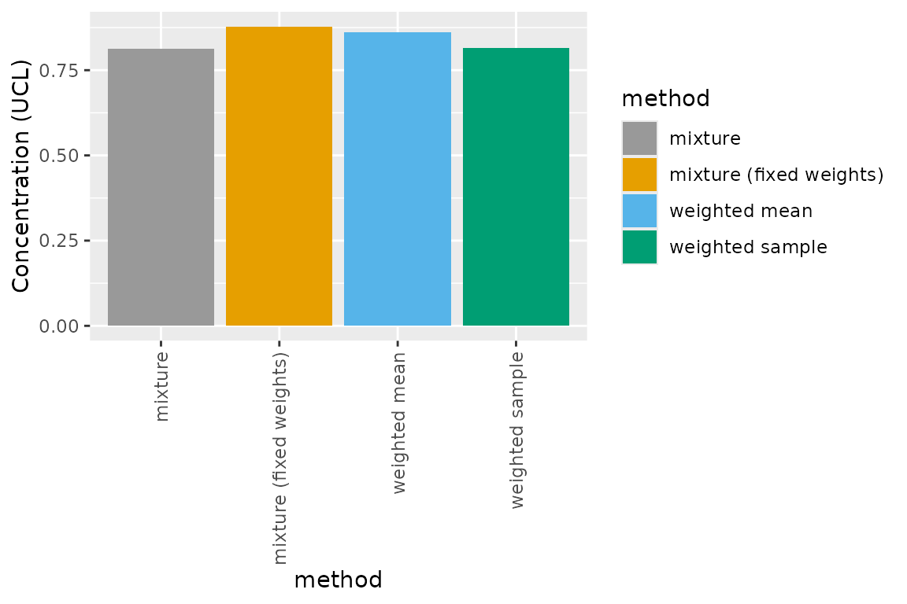
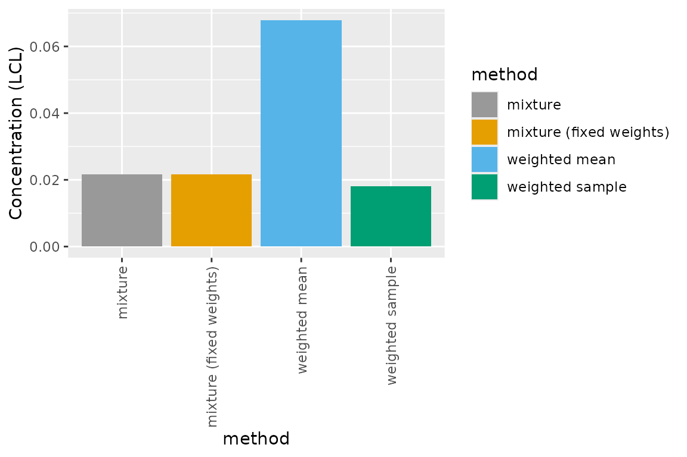

Confidence Intervals for Hazard Concentrations
ssdtools Team
2024-05-16
Source:vignettes/articles/confidence-intervals.Rmd
confidence-intervals.RmdBootstrap confidence intervals
Bootstrapping is a resampling technique used to obtain estimates of summary statistics. The team have explored the use of alternative methods for obtaining the confidence interval of HCx estimates. This included using the closed-form expression for the variance-covariance matrix of the parameters of the Burr III distribution, coupled with the delta-method, as well as an alternative bootstrap method for the inverse Pareto distribution based on statistical properties of the parameters (Fox et al. 2021). In both cases, it appeared that these methods can give results similar to other traditional bootstrapping approaches in much less time, and are therefore potentially worth further investigation. However, implementation of such methods across all the distributions now available in ssdtools would be a substantial undertaking.
The revised version of ssdtools retains the computationally intensive bootstrapping method to obtain confidence intervals and an estimate of standard errors. We recommend a minimum bootstrap sample of 1,000 (the current default - see argument nboot in ?ssd_hc()). However, more reliable results can be obtained using samples of 5,000 or 10,000. We recommend larger bootstrap samples for final reporting.
Parametric versus non-parametric bootstrapping
Burrlioz 2.0 uses a non-parametric bootstrap method to obtain confidence intervals on the HCx estimate. Non-parametric bootstrapping is carried out by repeatedly resampling the raw data with replacement, and refitting the distribution many times. The 95% confidence limits are then obtained by calculating the lower 0.025th and upper 0.975th quantiles of the resulting HCx estimates across all the bootstrap samples (typically >1000). This type of bootstrap takes into account uncertainty in the distribution fit based on uncertainty in the data.
The ssdtools package by default uses a parametric bootstrap. Instead of resampling the data, parametric bootstrapping draws a random a set of new data (of the same sample size as the original) from the fitted distribution to repeatedly refit the distribution. Upper and lower 95% bounds are again calculated as the lower 0.025th and upper 0.975th quantiles of the resulting HCx estimates across all the bootstrap samples (again, typically >1000). This will capture the possible uncertainty that may occur for a sample size from a given distribution, but it assumes no uncertainty in that original fit, so it is not accounting for uncertainty in the input data.
The new TMB version of ssdtools has the capacity to do bootstrapping either using the Burrlioz non-parametric method, or the original parametric method of ssdtools (based on fitdistrplus (Delignette-Muller and Dutang 2015)).
Using simulation studies the ssdtools team examined bias and compared the resulting coverage of the parametric and non-parametric bootstrapping methods (Fox et al. 2021). They found that coverage was better using the parametric bootstrapping method, and this has been retained as the default bootstrapping method in the update to ssdtools.
Bootstrapping model-averaged SSDs
Bootstrapping to obtain confidence intervals for individual fitted distributions is relatively straightforward. However, obtaining bootstrap confidence intervals for model-averaged SSDs requires careful consideration, as the procedure is subject to the same pitfalls evident when obtaining model-averaged HCx estimates. The Model Average SSDs vignette contains a detailed explanation of the fallacy of using the summed weighting of individual HCx values (as weighted arithmetic average), and how this can lead to spurious results. Model-averaged estimates and/or confidence intervals (including standard error) can be calculated by treating the distributions as constituting a single mixture distribution versus ‘taking the mean’. When calculating the model-averaged estimates treating the distributions as constituting a single mixture distribution ensures that ssd_hc() is the inverse of ssd_hp(), and this applies for model-averaged confidence intervals.
The revised version of ssdtools supports four methods for obtaining bootstrap confidence intervals, and these are discussed in detail below.
Weighted arithmetic mean
The early versions of ssdtools provided model-averaged confidence intervals (cis) and standard errors (se) that were calculated as weighted arithmetic means of the upper and lower cis and se values obtained via bootstrap simulation from each of the individual candidate distributions independently. This method is incorrect and may lead to spurious results (as described above) and has been shown via simulations studies to result in confidence intervals with very low coverage. The current version of ssdtools retains the functionality to reproduce the original behavior of ssdtools.
fit <- ssd_fit_dists(data = ssddata::ccme_silver)
set.seed(99)
ssd_hc(fit, ci = TRUE, multi_est = FALSE, ci_method = "weighted_arithmetic")
#> # A tibble: 1 × 11
#> dist proportion est se lcl ucl wt method nboot pboot samples
#> <chr> <dbl> <dbl> <dbl> <dbl> <dbl> <dbl> <chr> <dbl> <dbl> <I<lis>
#> 1 average 0.05 0.192 0.216 0.0679 0.861 1 paramet… 1000 0.998 <dbl>Use of this method for obtaining ci and se values is not recommended and only retained for legacy comparison purposes. It is both technically incorrect, and computationally inefficient.
Weighted mixture distribution
A more theoretically correct way of obtaining ci and se values is to
consider the model average set as a mixture distribution (see above, and
the Model Average SSDs vignette).
When we consider the model set as a mixture distribution, bootstrapping
is achieved by resampling from the model set according to the AICc based
model weights. A method for sampling from mixture distributions has been
implemented in ssdtools, via the function ssd_rmulti(), which
will generate random samples from a mixture of any combination of
distributions currently implemented in ssdtools.
When bootstrapping from the mixture distribution, a question arises whether the model weights should be re-estimated for every bootstrap sample, or fixed at the values estimated from the models fitted to the original sample of toxicity data? This is an interesting question that may warrant further investigation, however our current view is that they should be fixed at their nominal values in the same way that the component distributions to be used in bootstrapping are informed by the fit to the sample toxicity data. Using simulation studies we explored the coverage and bias of ci values obtained without and without fixing the distribution weights, and results indicate little difference.
The following code can be used to obtain confidence intervals for HCx estimates via bootstrapping from the weighted mixture distribution (using ssd_rmulti()), with and without fixed weight values respectively.
# Using the multi boostrapping method with fixed weights
ssd_hc(fit, ci = TRUE, ci_method = "multi_fixed")
#> # A tibble: 1 × 11
#> dist proportion est se lcl ucl wt method nboot pboot samples
#> <chr> <dbl> <dbl> <dbl> <dbl> <dbl> <dbl> <chr> <dbl> <dbl> <I<lis>
#> 1 average 0.05 0.190 0.207 0.0194 0.824 1 paramet… 1000 1 <dbl>
# Using the multi boostrapping method without fixed weights
ssd_hc(fit, ci = TRUE, ci_method = "multi_free")
#> # A tibble: 1 × 11
#> dist proportion est se lcl ucl wt method nboot pboot samples
#> <chr> <dbl> <dbl> <dbl> <dbl> <dbl> <dbl> <chr> <dbl> <dbl> <I<lis>
#> 1 average 0.05 0.190 0.211 0.0223 0.838 1 paramet… 1000 1 <dbl>Use of this method (without or without fixed weights) is theoretically correct, but is computationally very inefficient.
Weighted bootstrap sample
The developers of ssdtools investigated a third method
for obtaining confidence intervals for the model-averaged SSD. This
method bootstraps from each of the distributions individually, taking a
weighted sample from each, and then combining these into a pooled
bootstrap sample for estimation of te ci and se values. Pseudo code for
this method is as follows:
For each distribution in the
fitdistsobject, the proportional number of bootstrap samples to draw (nboot_vals) is found usinground(nboot * weight), wherenbootis the total number of bootstrap samples and weight is the AICc based model weights for each distribution based on the originalssd_fitdistfit.For each of the
nboot_valsfor each distribution, a random sample of size N is drawn (the total number of original data points included in the original SSD fit) based on the estimated parameters from the original data for that distribution.The random sample is re-fitting using that distribution.
HCx is estimated from the re-fitted bootstrap fit.
The HCx estimates for all
nboot_valsfor each distribution are then pooled across all distributions, and quantile() is used to determine the lower and upper confidence bounds for this pooled weighted bootstrap sample of HCx values.
This method does not draw random samples from the mixture distribution using ssd_rmulti. While mathematically the method shares some properties with obtaining HCx estimates via summing the weighted values (weighted arithmetic mean), simulation studies have shown that, as a method for obtaining confidence intervals, this pooled weighted sample method yields similar ci values and coverage the ssd_rmulti() method, and is computationally much faster.
This method is currently the default method in ssdtools, and can be
implemented by simply calling ssd_hc().
# Using a weighted pooled bootstrap sample
ssd_hc(fit, ci = TRUE)
#> # A tibble: 1 × 11
#> dist proportion est se lcl ucl wt method nboot pboot samples
#> <chr> <dbl> <dbl> <dbl> <dbl> <dbl> <dbl> <chr> <dbl> <dbl> <I<lis>
#> 1 average 0.05 0.190 0.214 0.0181 0.816 1 paramet… 1000 0.999 <dbl>Comparing bootrapping methods
We have undertaken extensive simulation studies comparing the implemented methods, and the results of these are reported elsewhere. For illustrative purposes, here we compare upper and lower confidence intervals using only a single example data set, the Silver data set from the Canadian Council of Ministers of the Environment (ccme).
Using the default settings for ssdtools, we compared the upper and lower confidence intervals for the four bootstrapping methods described above. Estimate upper confidence limits are relatively similar among the four methods. However, the lower confidence interval obtained using the weighted arithmetic mean (the method implemented in earlier versions of ssdtools) is much higher than the other three methods, potentially accounting for the relatively poor coverage of this method in our simulation studies.
library(ggplot2)
library(ggpubr)
p1 <- ggplot(compare_dat, aes(method, ucl, fill = method)) +
geom_bar(stat="identity", position=position_dodge()) +
theme_classic() +
theme(axis.text.x = element_text(angle = 90, vjust = 0.5, hjust=1))
p2 <- ggplot(compare_dat, aes(method, lcl, fill = method)) +
geom_bar(stat="identity", position=position_dodge()) +
theme_classic() +
theme(axis.text.x = element_text(angle = 90, vjust = 0.5, hjust=1))
ggarrange(p1, p2,common.legend = TRUE)
Given the similarity of upper and lower confidence intervals of the weighted bootstrap sample method compared to the potentially more theoretically correct, but computationally more intensive weighted mixture method (via ssd_rmulti()), we also compared the time taken to undertake bootstrapping across the methods.
Using the default 1,000 bootstrap samples, the elapsed time to undertake bootstrapping for the mixture method was 29.07 seconds, compared to 2.66 seconds for the weighted bootstrap sample. This means that the weighted bootstrap method is ~ 11 times faster, representing a considerable computational saving across many SSDs. For this reason, this method is currently set as the default method for confidence interval estimation in ssdtools.
p3 <- ggplot(compare_dat, aes(method, time, fill = method)) +
geom_bar(stat="identity", position=position_dodge()) +
ylab("Elapsed time (seconds)") +
theme_classic() +
theme(axis.text.x = element_text(angle = 90, vjust = 0.5, hjust=1))
p3
References
Licensing
Copyright 2018-2024 Province of British Columbia
Copyright 2021 Environment and Climate Change Canada
Copyright 2023-2024 Australian Government Department of Climate Change,
Energy, the Environment and Water
The documentation is released under the CC BY 4.0 License
The code is released under the Apache License 2.0